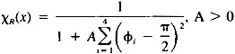

by Abraham Kandel
CRC Press, CRC Press LLC
ISBN: 084934297x Pub Date: 11/01/91
|
|
Fuzzy Expert Systems
by Abraham Kandel CRC Press, CRC Press LLC ISBN: 084934297x Pub Date: 11/01/91 |
| Previous | Table of Contents | Next |
FIDES code is artificially intelligent since it understands the objects it reasons with. The relationship between the numerical and the symbolic codes is based on the need to interpret massive amounts of data. This is done by making the numerical code “Smarter” just by adding the symbolic interface, and thus we have a system where efficient symbolic code is replacing parts of the numerical code in order to achieve a higher level of performance.
Figure 1 Present architecture of the system.
Figure 1 shows the architecture of FIDES. The user interface runs at the moment on a SUN workstation. The expert system is written in LISP and runs on a VAX 11/780. The supercomputer CYBER 205 is used for the numerical computations. Hence, FIDES is a distributed system that runs on different machines with different operating systems and is certainly not a conventional expert system, at least not in the clerical sense.
A small set of FIDES rules, which is given as follows, demonstrates in Figure 2 a first stage of subdivision of three different subpolygons that could participate in composing (along with other subpolygons) the original closed polygon. The four-sided polygon (Figure 2A) is divided into triangles which are transferred to another knowledge base for further investigation by FIDES. The long fuzzy rectangle (Figure 2B) is presented by an eight-sided polygon which will now be properly subdivided. The seven-sided polygon (Figure 2C) is replaced by four-sided and five-sided polygons. On each of these polygons further subdivision will be performed.
Figure 2 Subdivision. (A) A concave four-sided polygon; (B) a long fuzzy rectangle; (C) a seven-sided polygon.
| Rule 1. | If the object has three sides, then the object is triangle. |
| Rule 2. | If the object has four sides, then the object is four-sided. |
| Rule 3. | If the object is four-sided and the object has all angles equal to 1.57, then the object is rectangle. |
| Rule 4. | If the object is rectangle and the object has largeratio, then the object is narrowrec. |
| Rule 5. | If the object is rectangle and the object has smallratio, then the object is standrec. |
| Rule 6. | If the object has more than four sides, then the object is polygon. |
| Rule 7. | If the object is four-sided and the angle is greater than 1.7, then the object is square. |
Any conclusion related to a given object (subpolygon) is naturally associated with a certainty factor α, 0 ≤ α ≤ 1. For example, consider the question whether a given four-sided polygon is a “rectangle”. We must first decide which subpolygons are perfect rectangles. One alternative is to define a four-sided subpolygon as a perfect rectangle if and only if each of its four angles is 90°. We then propose a rectangle fuzzy function, i.e.:

defined for any four-sided polygon x with angles φi, 1 ≤ i ≤ 4. If φi = , 1 ≤ i ≤ 4, then x is a perfect rectangle. Otherwise, it is a rectangle with certainty α = XR(x). We thus constructed a rectangle fuzzy set:
R = {(x,χR(x)) | x is a four-sided polygon}
Similarly we may define a “narrow” fuzzy set:
N = {(x,χN(x)) | x is a four-sided polygon}
whose general member is again any four-sided polygon. This time the grade of membership is given by χN(x) — a fuzzy function that determines just how narrow x is by calculating ratios of opposite sides of x. A four-sided polygon is considered perfectly narrow if the minimum of all these ratios exceeds a given threshold σ and χN(x) is defined accordingly, i.e., χN(x) = 1 for such objects.
Now, let us try to determine whether a given four-sided object is a narrow rectangle. We define a third fuzzy set NR — the intersection of N and R:
where
A perfect narrow rectangle must, therefore, be a four-sided polygon with four right angles whose large ratio of opposite sides exceeds the threshold σ.
Thus, in general, each “intermediate” conclusion CI that identifies a given object is associated with a certainty factor α. This factor is computed by a fuzzy function, whose parameters characterize the geometry of the object. The pair (CI,α) is then transferred to the blackboard which is the logical part of the inference engine, provided that α exceeds some threshold α0. When the inference of the knowledge base is completed, the blackboard contains a sequence of pairs .
Let CF be a “final” conclusion which is fired by the sequence of intermediate conclusions with certainty factors (all of which are placed on the blackboard). Then, CF is placed on the blackboard with the certainty factor βi, where:
βi = min{αi1,...,αim}
If the blackboard finally consists of the final pairs , then the object is recognized with the certainty factor CF1 for which:
βl = max{β1,...,βk}
For example, let a four-sided object be a rectangle with certainty factor 0.73, a square with certainty factor 0.62, and possess a largeratio with certainty factor 0.80. Then, the final conclusions are as follows:
The object is thus recognized as a narrowrec and is further subdivided as in Figure 3B. If we would simply exchange the certainty factors 0.73 and 0.62, the object would be recognized as a square and would be subdivided as in Figure 3A.
| Previous | Table of Contents | Next |
){kind=link}
){kind=link}